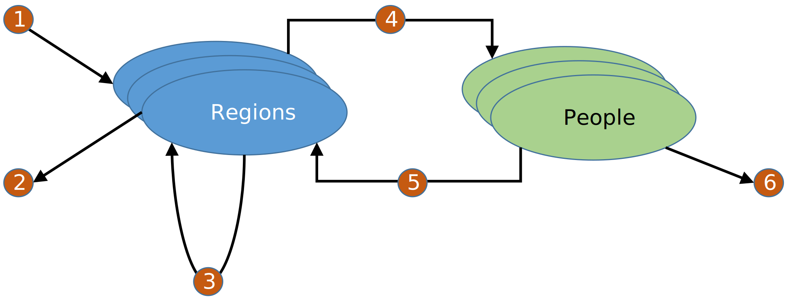

11 Resources Plugin
The resources plugin manages the assignment of resources between people and regions. It is dependent on the people and region plugins. A resource can represent expendable goods such as vaccines and medications as well as durable goods such as hospital beds. Resource instances do not have id values. For example, while a person or a group of people has an integer-based id, a single syringe, dose of vaccine or hospital bed has no unique id. Instead, they are measured as countable quantities that are associated with people or regions.
The flow of resources is diagrammed in Figure 11.1. Resources may:
- Be added to a region
- An amount of resource is created and added to a region
- Be removed from a region
- The resource is expended and removed from the simulation. For example, an expired vaccine lot.
- Transferred between regions
- Transferred from regions to people
- Resources can be transferred from a region to the people in that region
- Transferred from people to regions
- Resources can be returned to the person’s region. For example, the return of a hospital ICU bed after a person’s treatment.
- Be removed from a person
- The resource is expended and removed from the simulation. For example, a dose of medication
Resource flow to and from people is restricted to the region that is associated with the person.
11.1 Plugin Data Initialization
The plugin is initialized using a ResourcesPluginData object that:
- Defines resource ids
- Defines resource properties
- Collects resource property values
- Sets initial resource amounts for regions
- Sets initial resource amounts for people
11.2 Plugin Behavior
The plugin adds a single data manager to the simulation as an instance of the ResourcesDataManager that is initialized with the ResourcesPluginData.
11.3 Data Manager
The data manager manages person and region inventories of resources as well as any properties associated with resources. The data manager provides public methods that:
- Add a new resource id, thus defining a new resource type
- Define a resource property
- Add resource amounts to regions
- Remove resource amounts from regions
- Transfer resource amounts between regions
- Transfer resource amounts between regions and people
- Remove resource amounts from people
- Answer various questions about:
- People who have or do not have a particular resource
- Resource levels for people and regions
- Property values, definitions, resource id values, etc.
The data manager also produces observable events:
- PersonResourceUpdateEvent – when a person has a change in a resource level
- RegionResourceUpdateEvent – when a region has a change in a resource level
- ResourceIdAdditionEvent – when a new resource id is added
- ResourcePropertyDefinitionEvent – when a new resource property definition is added
- ResourcePropertyUpdateEvent – when a resource property value is assigned
11.4 Example Code (Lesson 18)
Example_18.java shows the use of the resources plugin. In it we will examine:
- The initialization of the resource properties plugin
- The flow of resources between regions and people
- The observation of resource events
The example includes seven plugins:
- Resources plugin – (GCM core plugin) used to manage resources
- People plugin – (GCM core plugin) used to manage people
- Person properties plugin– (GCM core plugin) used to decorate properties onto people
- Global properties plugin– (GCM core plugin) used to store policies and initial conditions affecting resource use
- Stochastics plugin – (GCM core plugin) used to generate random numbers used in various decisions
- Regions Plugin– (GCM core plugin) used for resource flow
- Model plugin – (local plugin) used to introduce three actors that will:
- Load the population
- Distribute resources to regions
- Manage the treatment of disease utilizing resources
11.5 Model
The example’s model represents a disease that is treatable through antiviral medication and hospitalization. People at the start of the simulation are either immune or susceptible and all susceptible people are exposed and infected at random times over a given period. There is no transmission modeling. Initial treatment is with a single dose of an antiviral drug, if it is available. If the antiviral drug is not available or the drug is not effective, the person is hospitalized. If there are no hospital beds are available, the person dies. After a course of treatment in the hospital, the person is either immune or dead. Previous treatment with the antiviral alters the outcome probabilities of the hospital stay. Upon the person’s release from the hospital, the hospital bed is returned to the person’s region. Questionnaires are sent to people who have been successfully treated.
11.6 Model Execution
The example’s execution is shown in Code Block 11.1 and Code Block 11.2.
public static void main(String[] args) throws IOException {
if (args.length == 0) {
throw new RuntimeException("One output directory argument is required");
}
Path outputDirectory = Paths.get(args[0]);
if (!Files.exists(outputDirectory)) {
Files.createDirectory(outputDirectory);
} else {
if (!Files.isDirectory(outputDirectory)) {
throw new IOException("Provided path is not a directory");
}
}
new Example_18(outputDirectory).execute();
}private void execute() {
ExperimentParameterData experimentParameterData = ExperimentParameterData.builder()//
.setThreadCount(8)//
.build();
Experiment.builder()
.addPlugin(getResourcesPlugin())//
.addPlugin(getGlobalPropertiesPlugin())//
.addPlugin(getPersonPropertiesPlugin())//
.addPlugin(getRegionsPlugin())//
.addPlugin(getPeoplePlugin())//
.addPlugin(getStochasticsPlugin())//
.addPlugin(ModelPlugin.getModelPlugin())//
.addDimension(getMaximumSymptomOnsetTimeDimension())//
.addDimension(getSusceptiblePopulationProportionDimension())//
.addDimension(getAntiviralCoverageTimeDimension())//
.addDimension(getAntiviralSuccessRateDimension())//
.addDimension(getHospitalSuccessDimension())//
.addDimension(getHospitalBedsPerPersonDimension())//
.addDimension(getAntiviralDosesPerPersonDimension())//
.addDimension(getHospitalStayDurationDimension())//
.addExperimentContextConsumer(getNIOReportItemHandler())//
.setExperimentParameterData(experimentParameterData)//
.build()//
.execute();//
}The first action is to add the resources plugin (Code Block 11.3, Code Block 11.4). Only the resource id values contained in the Resource enumeration are added to the plugin’s data. Region and person initial resource levels can also be added, but we will instead initialize them via an actor in the model plugin.
public enum Resource implements ResourceId {
ANTI_VIRAL_MED, HOSPITAL_BED;
}private Plugin getResourcesPlugin() {
ResourcesPluginData.Builder builder = ResourcesPluginData.builder();
for (ResourceId resourceId : Resource.values()) {
builder.addResource(resourceId, 0.0, true);
}
ResourcesPluginData resourcesPluginData = builder.build();
PersonResourceReportPluginData personResourceReportPluginData = PersonResourceReportPluginData//
.builder()//
.setReportLabel(ModelReportLabel.PERSON_RESOURCE_REPORT)//
.setReportPeriod(ReportPeriod.END_OF_SIMULATION)//
.build();
return ResourcesPlugin.builder()//
.setResourcesPluginData(resourcesPluginData)//
.setPersonResourceReportPluginData(personResourceReportPluginData)//
.getResourcesPlugin();//
}The next action is to load the global properties plugin (Code Block 11.5). All of the global properties are marked as immutable since they will not change over the course of the simulation. Further, most of the properties will participate in the dimensions of the experiment, so we can set the default values to zero.
- SUSCEPTIBLE_POPULATION_PROPORTION – The fraction of the population that is susceptible
- MAXIMUM_SYMPTOM_ONSET_TIME – The last time where any person will have onset of symptoms
- ANTIVIRAL_COVERAGE_TIME – The amount of time for the antiviral to be effective
- ANTIVIRAL_SUCCESS_RATE – The probability that the antiviral will be effective
- HOSPITAL_SUCCESS_WITH_ANTIVIRAL – The probability that hospital treatment will be effective for people who previously had antiviral treatment
- HOSPITAL_SUCCESS_WITHOUT_ANTIVIRAL – The probability that hospital treatment will be effective for people who previously had no antiviral treatment
- HOSPITAL_STAY_DURATION_MIN – The minimum duration of a hospital stay
- HOSPITAL_STAY_DURATION_MAX – The maximum duration of a hospital stay
- POPULATION_SIZE – The number of people across all regions. Regions will not be uniformly populated.
- HOSPITAL_BEDS_PER_PERSON – The number of hospital beds per person on average stored in the regions.
- ANTIVIRAL_DOSES_PER_PERSON – The number of antiviral doses per person on average stored in the regions.
private Plugin getGlobalPropertiesPlugin() {
GlobalPropertiesPluginData.Builder builder = GlobalPropertiesPluginData.builder();//
PropertyDefinition propertyDefinition = PropertyDefinition.builder()//
.setType(Double.class)//
.setDefaultValue(0.0)//
.setPropertyValueMutability(false)//
.build();
builder.defineGlobalProperty(GlobalProperty.SUSCEPTIBLE_POPULATION_PROPORTION, propertyDefinition, 0);
builder.defineGlobalProperty(GlobalProperty.MAXIMUM_SYMPTOM_ONSET_TIME, propertyDefinition, 0);
builder.defineGlobalProperty(GlobalProperty.ANTIVIRAL_COVERAGE_TIME, propertyDefinition, 0);
builder.defineGlobalProperty(GlobalProperty.ANTIVIRAL_SUCCESS_RATE, propertyDefinition, 0);
builder.defineGlobalProperty(GlobalProperty.HOSPITAL_SUCCESS_WITH_ANTIVIRAL, propertyDefinition, 0);
builder.defineGlobalProperty(GlobalProperty.HOSPITAL_SUCCESS_WITHOUT_ANTIVIRAL, propertyDefinition, 0);
builder.defineGlobalProperty(GlobalProperty.HOSPITAL_BEDS_PER_PERSON, propertyDefinition, 0);
builder.defineGlobalProperty(GlobalProperty.ANTIVIRAL_DOSES_PER_PERSON, propertyDefinition, 0);
builder.defineGlobalProperty(GlobalProperty.HOSPITAL_STAY_DURATION_MIN, propertyDefinition, 0);
builder.defineGlobalProperty(GlobalProperty.HOSPITAL_STAY_DURATION_MAX, propertyDefinition, 0);
propertyDefinition = PropertyDefinition.builder()//
.setType(Integer.class)//
.setDefaultValue(10000)//
.setPropertyValueMutability(false)//
.build();
builder.defineGlobalProperty(GlobalProperty.POPULATION_SIZE, propertyDefinition, 0);
GlobalPropertiesPluginData globalPropertiesPluginData = builder.build();
return GlobalPropertiesPlugin.builder().setGlobalPropertiesPluginData(globalPropertiesPluginData)
.getGlobalPropertiesPlugin();
}The person properties plugin is loaded (Code Block 11.6). All person properties are Boolean values and defaulted to false.
- IMMUNE – The person is immune
- INFECTED – The person is infected
- TREATED_WITH_ANTIVIRAL – The person received antiviral treatment
- HOSPITALIZED – The person received hospital treatment
- DEAD_IN_HOSPITAL – The person dies in the hospital
- DEAD_IN_HOME – The person dies in the home
- RECEIVED_QUESTIONNAIRE – An infected person who successfully completes treatment receives a questionnaire
private Plugin getPersonPropertiesPlugin() {
PersonPropertiesPluginData.Builder builder = PersonPropertiesPluginData.builder();
PropertyDefinition propertyDefinition = PropertyDefinition.builder()//
.setType(Boolean.class)//
.setDefaultValue(false)//
.build();
builder.definePersonProperty(PersonProperty.IMMUNE, propertyDefinition, 0, false);//
builder.definePersonProperty(PersonProperty.INFECTED, propertyDefinition, 0, false);//
builder.definePersonProperty(PersonProperty.HOSPITALIZED, propertyDefinition, 0, false);//
builder.definePersonProperty(PersonProperty.TREATED_WITH_ANTIVIRAL, propertyDefinition, 0, false);//
builder.definePersonProperty(PersonProperty.DEAD_IN_HOME, propertyDefinition, 0, false);//
builder.definePersonProperty(PersonProperty.DEAD_IN_HOSPITAL, propertyDefinition, 0, false);//
propertyDefinition = PropertyDefinition.builder()//
.setType(Boolean.class)//
.setDefaultValue(false)//
.build();
builder.definePersonProperty(PersonProperty.RECEIVED_QUESTIONNAIRE, propertyDefinition, 0, true);//
PersonPropertiesPluginData personPropertiesPluginData = builder.build();
return PersonPropertiesPlugin.builder().setPersonPropertiesPluginData(personPropertiesPluginData)
.getPersonPropertyPlugin();
}The are four reports:
- PersonResourceReport – Shows resource allocations by day and region. Resources are possessed by a person during the course of treatment.
- TreatmentReport – Shows a summary of all person property value combinations at the end of the simulation
- DeathReport – Shows absolute and per capita death rate per region
- QuestionnaireReport – Shows statistics on the distribution of questionnaires
The stochastic plugin is initialized with a random seed and all simulations will start in the same stochastic state. The Regions plugin has five regions and the people plugin is loaded in an empty state. People are added by an actor in the model plugin.
The model plugin adds three actors
- PopulationLoader – Adds people to the simulation and initializes immunity
- ResourceLoader – Initializes resources for regions. People have no allocated resources.
- TreatmentManager – Moves people through treatment states
11.7 Experiment dimensions
Eight dimensions are added to the experiment that define alternate values for ten of the eleven global properties resulting in 864 scenarios. Only population size is fixed and is set to 10,000. The values are:
- Max Symptom onset – 60 and 120 days
- Susceptibility – 25, 50 and 75 percent
- Antiviral treatment duration – 10 and 15 days
- Antiviral treatment success – 50 and 80 percent
- Hospital success rate with and without antivirals
- 75 and 50 percent
- 50 and 30 percent
- Hospital beds per capita – 1, 3 and 5 per thousand
- Antiviral doses per capita – 0.1, 0.2 and 0.5
- Hospital stay
- 2 to 5 days
- 5 to 10 days
11.8 The actors
We will finish this chapter by reviewing the three actors of the model plugin and then examine the output.
11.8.1 Population Loader
The PopulationLoader actor, in Code Block 11.7, adds people to the simulation based on the number in the POPULATION_SIZE global property. Each person is assigned a random region and the person property, IMMUNE, is randomly assigned based on the SUSCEPTIBLE_POPULATION_PROPORTION global property. The selection of regions, although random, is designed to ensure that regions have different population sizes so that each region may have unique output statistics.
public void init(ActorContext actorContext) {
StochasticsDataManager stochasticsDataManager = actorContext.getDataManager(StochasticsDataManager.class);
randomGenerator = stochasticsDataManager.getRandomGenerator();
PeopleDataManager peopleDataManager = actorContext.getDataManager(PeopleDataManager.class);
GlobalPropertiesDataManager globalPropertiesDataManager = actorContext
.getDataManager(GlobalPropertiesDataManager.class);
regionsDataManager = actorContext.getDataManager(RegionsDataManager.class);
int populationSize = globalPropertiesDataManager.getGlobalPropertyValue(GlobalProperty.POPULATION_SIZE);
double susceptibleProbability = globalPropertiesDataManager
.getGlobalPropertyValue(GlobalProperty.SUSCEPTIBLE_POPULATION_PROPORTION);
double immuneProbabilty = 1 - susceptibleProbability;
/*
* Derive mapping from region to probability that a person will be assigned to
* that region that will likely not put the same number of people in each
* region.
*/
buildUnbalancedRegions();
/*
* Add each person to the simulation. Determine their region id and the immune
* state. The other person properties will have default values.
*/
for (int i = 0; i < populationSize; i++) {
RegionId regionId = getRandomRegionId();
boolean immune = randomGenerator.nextDouble() < immuneProbabilty;
PersonPropertyValueInitialization personPropertyInitialization = new PersonPropertyValueInitialization(
PersonProperty.IMMUNE, immune);
PersonConstructionData personConstructionData = PersonConstructionData.builder()//
.add(personPropertyInitialization)//
.add(regionId)//
.build();
peopleDataManager.addPerson(personConstructionData);
}
}11.8.2 Resource Loader
The ResourceLoader actor, in Code Block 11.8, determines the number of antiviral doses and hospital beds for each region. Note that each region receives the same amounts, but that the regions will have very different population sizes.
public void init(ActorContext actorContext) {
RegionsDataManager regionsDataManager = actorContext.getDataManager(RegionsDataManager.class);
ResourcesDataManager resourcesDataManager = actorContext.getDataManager(ResourcesDataManager.class);
GlobalPropertiesDataManager globalPropertiesDataManager = actorContext
.getDataManager(GlobalPropertiesDataManager.class);
int populationSize = globalPropertiesDataManager.getGlobalPropertyValue(GlobalProperty.POPULATION_SIZE);
Set<RegionId> regionIds = regionsDataManager.getRegionIds();
double dosesPerPerson = globalPropertiesDataManager
.getGlobalPropertyValue(GlobalProperty.ANTIVIRAL_DOSES_PER_PERSON);
double totalDoses = dosesPerPerson * populationSize;
int doseCount = (int) totalDoses;
int doseCountPerRegion = doseCount / regionIds.size();
double bedsPerPerson = globalPropertiesDataManager
.getGlobalPropertyValue(GlobalProperty.HOSPITAL_BEDS_PER_PERSON);
double totalBeds = bedsPerPerson * populationSize;
int bedCount = (int) totalBeds;
int bedCountPerRegion = bedCount / regionIds.size();
for (RegionId regionId : regionIds) {
resourcesDataManager.addResourceToRegion(Resource.ANTI_VIRAL_MED, regionId, doseCountPerRegion);
resourcesDataManager.addResourceToRegion(Resource.HOSPITAL_BED, regionId, bedCountPerRegion);
}
}11.8.3 Treatment Manager
The TreatmentManager actor, in Code Block 11.9, initializes by first deriving several values from the global properties plugin that will be useful as it manages people. It then gets from the person properties manager a list of all people who are not currently immune and marks them as infected. It further determines for each person when they will become symptomatic and schedules the allocation of the antiviral resource.
public void init(ActorContext actorContext) {
this.actorContext = actorContext;
regionsDataManager = actorContext.getDataManager(RegionsDataManager.class);
resourcesDataManager = actorContext.getDataManager(ResourcesDataManager.class);
StochasticsDataManager stochasticsDataManager = actorContext.getDataManager(StochasticsDataManager.class);
randomGenerator = stochasticsDataManager.getRandomGenerator();
personPropertiesDataManager = actorContext.getDataManager(PersonPropertiesDataManager.class);
GlobalPropertiesDataManager globalPropertiesDataManager = actorContext
.getDataManager(GlobalPropertiesDataManager.class);
double maximumSymptomOnsetTime = globalPropertiesDataManager
.getGlobalPropertyValue(GlobalProperty.MAXIMUM_SYMPTOM_ONSET_TIME);
antiviralCoverageTime = globalPropertiesDataManager
.getGlobalPropertyValue(GlobalProperty.ANTIVIRAL_COVERAGE_TIME);
antiviralSuccessRate = globalPropertiesDataManager
.getGlobalPropertyValue(GlobalProperty.ANTIVIRAL_SUCCESS_RATE);
hospitalSuccessWithAntiviral = globalPropertiesDataManager
.getGlobalPropertyValue(GlobalProperty.HOSPITAL_SUCCESS_WITH_ANTIVIRAL);
hospitalSuccessWithoutAntiviral = globalPropertiesDataManager
.getGlobalPropertyValue(GlobalProperty.HOSPITAL_SUCCESS_WITHOUT_ANTIVIRAL);
hospitalStayDurationMin = globalPropertiesDataManager
.getGlobalPropertyValue(GlobalProperty.HOSPITAL_STAY_DURATION_MIN);
hospitalStayDurationMax = globalPropertiesDataManager
.getGlobalPropertyValue(GlobalProperty.HOSPITAL_STAY_DURATION_MAX);
List<PersonId> susceptiblePeople = personPropertiesDataManager.getPeopleWithPropertyValue(PersonProperty.IMMUNE,
false);
for (PersonId personId : susceptiblePeople) {
double symptomOnsetTime = randomGenerator.nextDouble() * maximumSymptomOnsetTime;
personPropertiesDataManager.setPersonPropertyValue(personId, PersonProperty.INFECTED, true);
actorContext.addPlan((c) -> treatWithAntiviral(personId), symptomOnsetTime);
}
}When a person becomes symptomatic (Code Block 11.10), the treatment manager attempts to find a single dose of the antiviral medication for them. The dose must come from the region associated with the person. If the dose is available, the person is treated and a review of the effectiveness of the treatment is scheduled. If no dose is available, the person is immediately sent to hospital treatment.
To assess the effectiveness of the antiviral treatment (Code Block 11.11), the treatment manager randomly makes a determination based on the global property settings. If the treatment is successful, then the person is marked as immune. Otherwise, the person is immediately sent to hospital treatment.
Hospitalization starts (Code Block 11.12) by finding an available hospital bed for the person from the person’s current region. If one is available, it is assigned to the person and a review of the effectiveness of the hospital treatment is scheduled for a random time based on the min and max hospital treatment durations. If no hospital bed is available, then the person dies.
private void hospitalizePerson(PersonId personId) {
RegionId regionId = regionsDataManager.getPersonRegion(personId);
long availableHospitalBeds = resourcesDataManager.getRegionResourceLevel(regionId, Resource.HOSPITAL_BED);
if (availableHospitalBeds > 0) {
resourcesDataManager.transferResourceToPersonFromRegion(Resource.HOSPITAL_BED, personId, 1L);
personPropertiesDataManager.setPersonPropertyValue(personId, PersonProperty.HOSPITALIZED, true);
double hospitalizationDuration = (hospitalStayDurationMax - hospitalStayDurationMin)
* randomGenerator.nextDouble() + hospitalStayDurationMin;
actorContext.addPlan((c) -> assessHospitalization(personId),
actorContext.getTime() + hospitalizationDuration);
} else {
personPropertiesDataManager.setPersonPropertyValue(personId, PersonProperty.DEAD_IN_HOME, true);
}
}Reviewing the effectiveness of the hospital treatment is shown in Code Block 11.13. The outcome depends the previous treatment of the person with the antiviral medication. If the treatment is successful, then the person is marked immune. Otherwise, the person dies. The hospital bed resource is returned to the person’s region either way.
private void assessHospitalization(PersonId personId) {
boolean treatedWithAntiViral = personPropertiesDataManager.getPersonPropertyValue(personId,
PersonProperty.TREATED_WITH_ANTIVIRAL);
double probabilityOfSuccess;
if (treatedWithAntiViral) {
probabilityOfSuccess = hospitalSuccessWithAntiviral;
} else {
probabilityOfSuccess = hospitalSuccessWithoutAntiviral;
}
if (randomGenerator.nextDouble() < probabilityOfSuccess) {
personPropertiesDataManager.setPersonPropertyValue(personId, PersonProperty.IMMUNE, true);
} else {
personPropertiesDataManager.setPersonPropertyValue(personId, PersonProperty.DEAD_IN_HOSPITAL, true);
}
resourcesDataManager.transferResourceFromPersonToRegion(Resource.HOSPITAL_BED, personId, 1L);
}11.8.4 Questionnaire Manager
The QuestionnaireManager actor, in Code Block 11.14, initializes by subscribing to changes to the number of antivirals or hospital beds possessed by people.
public void init(ActorContext actorContext) {
ResourcesDataManager resourcesDataManager = actorContext.getDataManager(ResourcesDataManager.class);
personPropertiesDataManager = actorContext.getDataManager(PersonPropertiesDataManager.class);
EventFilter<PersonResourceUpdateEvent> eventFilter = resourcesDataManager
.getEventFilterForPersonResourceUpdateEvent(Resource.ANTI_VIRAL_MED);
actorContext.subscribe(eventFilter, this::handleAntiViralDistribution);
eventFilter = resourcesDataManager.getEventFilterForPersonResourceUpdateEvent(Resource.HOSPITAL_BED);
actorContext.subscribe(eventFilter, this::handleHospitalBedDistribution);
}Upon observing a change in the number of antivirals assigned to a person (Code Block 11.15), the questionnaire manager distributes the questionnaire to the person if that person has just ended antiviral treatment (their level is now zero) but has not been hospitalized.
private void handleAntiViralDistribution(ActorContext actorContext,
PersonResourceUpdateEvent personResourceUpdateEvent) {
PersonId personId = personResourceUpdateEvent.personId();
boolean hasAntiviral = personResourceUpdateEvent.currentResourceLevel() > 0;
if (!hasAntiviral) {
boolean hospitalized = personPropertiesDataManager.getPersonPropertyValue(personId,
PersonProperty.HOSPITALIZED);
if (!hospitalized) {
distributeQuestionaire(personId);
}
}
}For those who receive treatment at a hospital (Code Block 11.16), questionnaire manager distributes the questionnaire to the them when their hospital bed is returned and they have not died.
private void handleHospitalBedDistribution(ActorContext actorContext,
PersonResourceUpdateEvent personResourceUpdateEvent) {
PersonId personId = personResourceUpdateEvent.personId();
boolean hasBed = personResourceUpdateEvent.currentResourceLevel() > 0;
boolean dead = personIsDead(personId);
if (!hasBed && !dead) {
distributeQuestionaire(personId);
}
}11.9 Inspecting the output
11.9.1 person resource report
The 864 scenarios result in a large amount of output in the person resource report. The example code has this report set to only record the end state of the simulation, where all resources have either been expended or returned back to the regions. Running the report in daily mode will produce over 900,000 data rows, but will show a more useful result.
11.9.2 treatment report
The treatment report shows for each scenario the number or people matching any particular set of person property values at the end of the simulation. Since there are six person properties and they are all Boolean valued, there are potentially 64 possible tuples. However, some tuples are impossible since a person cannot be both immune and dead, etc. The result is 6,240 rows of data for the 864 scenarios.
11.9.3 death report
The death report summarizes the treatment report and calculates per capita death rates for each region. Due to the uneven distribution of resources between the regions based on their populations, the per capita deaths vary between 0.25 and 75 percent. The trends in the data match expectations with deaths being driven by earlier onset of symptoms, longer hospital stays, and lower effectiveness of both treatment capabilities.
11.9.4 questionnaire report
The questionnaire report shows the proportion of infected people that received the questionnaire. It also shows the mean and standard deviation of the delivery times of those questionnaires.